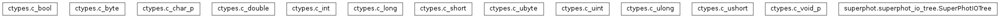

superphot.superphot_io_tree module¶
Class Inheritance Diagram¶

Define a function for intefracing with the superphotio library.
-
class
superphot.superphot_io_tree.SuperPhotIOTree(library_configuration, version_info='')[source]¶ Bases:
objectInterface for extracting entries from an IO::H5IODataTree.
-
__init__(library_configuration, version_info='')[source]¶ Create a tree with just the given configuration.
Parameters: - library_configuration – The configuration object created by the library for the tool which will be using the configuration tree.
- version_info – Information about the version of the tool/scripts/… using this tree. It is safe to leave this empty, if it is not required as an entry in the tree.
Returns: None
-
get(quantity, dtype=<class 'ctypes.c_double'>, shape=None)[source]¶ Return the given quantity as a proper python object.
Parameters: - quantity (str) – The quantity to extract from the tree.
- dtype – The data type of individual values of the quantity.
- shape (tulpe of ints) – The shape of the array of values to expect. Use None for scalar quantities.
Returns: The values of the quantity. The return type is always an array, even for sintgle valued quantities. In the latter case, the shape is (1,).
Return type: numpy.ndarray(shape=shape, dtype=dtype)
-
get_psfmap_variables(image_index, num_variables, num_sources)[source]¶ Return the values of the PSF map variables for all sources in an image.
Parameters: - image_index – The index of the image for which to return the values of the variables as supplied to PSF fitting.
- num_variables – The number of variables used for PSF fitting.
- num_sources – The number of sources in the selected image.
Returns: Array with records named as the PSF map variables and entries containing the values of the variables for all sources in the image identified by image_index.
Return type: numpy.ndarray(dtype=float, shape=(num_variables, num_sources)
-
type_string= {<class 'ctypes.c_bool'>: 'bool', <class 'ctypes.c_double'>: 'double', <class 'ctypes.c_int'>: 'int', <class 'ctypes.c_short'>: 'short', <class 'ctypes.c_long'>: 'long', <class 'ctypes.c_byte'>: 'char', <class 'ctypes.c_uint'>: 'uint', <class 'ctypes.c_ulong'>: 'ulong', <class 'ctypes.c_ushort'>: 'ushort', <class 'ctypes.c_ubyte'>: 'uchar'}¶
-